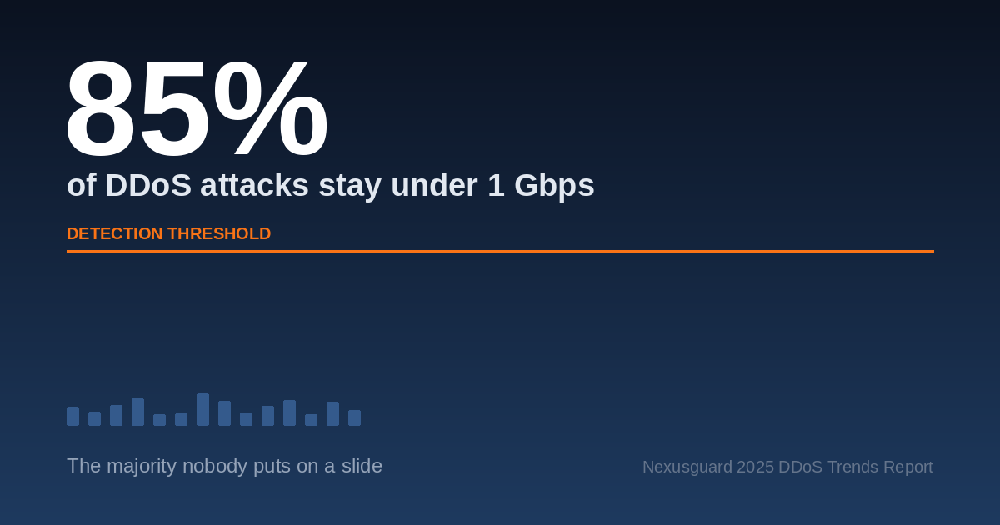

Article
Sub-1 Gbps Attacks: The 85% Nobody Puts on a Slide
85% of DDoS attacks stay under 1 Gbps, yet every threat report headlines the terabit outlier. Why low-volume attacks evade detection and what to do about it.

The most common DDoS attack against your network this year will be small enough that your monitoring probably will not call it an attack. Nexusguard's own telemetry puts it plainly. 85% of DDoS attacks remain under 1 Gbps (Nexusguard 2025 DDoS Trends Report, June 2025). Attackers favour short-burst, low-resource attacks precisely because they evade detection.
That number appears in our report. It did not appear in most of the coverage of our report. The headline went to the record: a 962.2 Gbps peak and a 69% year-over-year rise in average attack size, both from that same report. Both facts are true, both came from the same dataset, and only one of them describes what happens to a service provider network on an ordinary Tuesday.
This is not a complaint about journalists. It is a complaint about slides, including ours. The attack that makes the keynote is not the attack that makes the ticket queue, and the gap between those two has started to shape what networks buy and how they configure it.
Key Takeaways
- 85% of DDoS attacks stay under 1 Gbps, and over half of sub-1 Gbps attacks fall under 200 Mbps, small enough to pass for ordinary traffic noise.
- More than 90% of network-layer attacks finish in under 10 minutes, and pulse attacks as short as six seconds are now documented. Reactive mitigation cannot engage in that window.
- Threshold-based detection and sampled flow telemetry are not failing at this job. They were configured to ignore this traffic band on purpose, to suppress false positives.
- At this size, a DDoS event is often reconnaissance or cover rather than a disruption attempt, which makes it a security signal, not just an availability one.
Most DDoS Attacks Are Too Small to Make the Headline
The size distribution is not in dispute, and it is remarkably consistent across vendors who see very different slices of internet traffic.
| Vendor / report | Threshold | Share below it | Period |
|---|---|---|---|
| Nexusguard 2025 DDoS Trends Report | under 1 Gbps | 85% | published June 2025 |
| Cloudflare DDoS Threat Report | under 1 Gbps | 99% | Q1 2025 |
| Cloudflare DDoS Threat Report | under 500 Mbps | 96.6% | H1 2026 |
| Corero / DigiCert UltraDDoS reporting | under 500 Mbps | 73% | 2025 |
Three vendors, four datasets, one conclusion. The exact percentage moves with the threshold and the dataset. The shape does not.
Duration tells the same story. More than 90% of network-layer attacks ended in under 10 minutes in the first half of 2026 (Cloudflare DDoS Threat Report H1 2026, August 2026). Corero's 2026 Threat Intelligence Report documents six-second pulse attacks, which it describes as eliminating the window for reactive intervention (Corero Network Security, 2 April 2026).
So why does the outlier get the slide? Because a record is novel, quotable and easy to draw. A 180 Mbps flood lasting 40 seconds is none of those things. The reporting is accurate. The emphasis is inverted, and emphasis is what drives procurement.
For the full dataset behind these figures, see our DDoS threat report library.
What Counts as a Sub-Saturating Attack?
A sub-saturating attack is a DDoS attack deliberately sized below the target's link capacity and below its detection thresholds, so it degrades service or occupies defenders without ever triggering an alarm.
The word doing the work in that definition is "below". Below what, exactly, is the part the industry keeps dropping.
Attack size means nothing without a denominator. An 800 Mbps flood is rounding error on a 100 Gbps peering link and a total outage on a 1 Gbps customer uplink. When a report says most attacks are small, it is describing the numerator and leaving you to supply the denominator from your own network. An attack that a tier-1 backbone absorbs without noticing can saturate a hosting provider, a game server or a regional operator whose uplink sits in the 1 to 10 Gbps range. Same attack, different outcome, because the denominator changed.
It is worth separating sub-saturating attacks from two adjacent patterns they are often confused with. Pulse wave attacks are repeated short bursts aimed at a single target. Carpet bombing, also called bit-and-piece, is an attack distributed thinly across an entire IP prefix so that no single destination trips a threshold. All three are evasion strategies, but they evade along different axes: size, rhythm and spread.
For the spread-based variant, see how bit-and-piece and carpet bombing attacks distribute traffic across an entire prefix.
Small Does Not Mean Harmless
Three failure modes show up well below saturation:
- Stateful device exhaustion. Firewalls, load balancers and NAT gateways run out of session table entries long before they run out of bandwidth. A 200 Mbps SYN flood can exhaust state on a device rated for far more throughput.
- SLA-relevant degradation. Latency and packet loss that never register as an outage still breach performance commitments, and customers feel them before your monitoring does.
- Support cost with no incident to point at. Tickets arrive, engineers investigate, nothing correlates with a security event, and the time is written off as an unexplained blip.
Why Threshold-Based Detection Is Built to Miss Them
Every threshold encodes a judgement about what is worth noticing. Sub-saturating attacks are engineered against that judgement.
Thresholds exist to suppress false positives. A system that alerts on every 150 Mbps deviation in a carrier network would be unusable within a day, so operators set the trigger where alerts stay actionable. That is sound engineering, and it defines precisely the band an attacker wants to operate in. The blind spot is not a defect. It is the designed trade-off, and attackers read the design.
Telemetry compounds it. Sampled flow at 1:1000 with a five-minute export interval cannot resolve a 40-second event at 200 Mbps. The attack is gone before the export lands, and what survives sampling looks like jitter. Detection logic never gets a chance to be wrong, because it never sees the data.
Then there is the arithmetic of reactive mitigation. If detection takes 60 seconds and diversion to scrubbing takes another 60, a six-second pulse has finished twenty times over before anything engages. On-demand scrubbing is not tuned badly for this class of attack. It is structurally incapable of touching it.
What "We Have Never Been Hit" Usually Means
For most networks, an absence of DDoS alerts in this size band is evidence about the alerting configuration, not about the threat environment. That is an uncomfortable read, and it is not a criticism of the people who set those thresholds. They were solving the alert-fatigue problem that the previous configuration created. The trap is that lowering thresholds to catch small attacks produces an alert storm, the storm gets escalated, and thresholds go back up within a quarter. Plenty of network teams have run that loop more than once.
The Small Attack Is Often Not the Attack
Here is the connection the industry makes surprisingly rarely: the literature on DDoS attack sizes and the literature on DDoS as a smokescreen have coexisted for a decade without citing each other.
At this scale, disruption is frequently not the objective. Four alternative motives are well documented in practitioner reporting:
- Reconnaissance. A small attack is a cheap probe. It reveals which thresholds exist, where they sit, how fast a response comes and who responds. The attacker learns your configuration by making you demonstrate it.
- Cover and log flooding. DDoS events generate alert volume, and alert volume buries other indicators. Security teams have described attackers synchronising floods with credential abuse, lateral movement and exfiltration. The flood also complicates forensics afterwards.
- Resource diversion. NOC and SOC attention is finite. A steady trickle of low-grade events is an efficient way to spend it.
- Extortion probing. A demonstration shot, sized to prove capability without provoking a full mitigation response.
A note on the strength of this evidence. The size and duration statistics in this article come from measured telemetry across several vendors. The smokescreen literature is largely practitioner observation and incident narrative rather than controlled measurement, and it deserves to be read as the weaker of the two. We are not claiming a quantified correlation between small DDoS events and subsequent intrusion, because we have not seen one published that would support it.
What follows from it is still operationally useful, and cheap to act on. Treat a sub-saturating DDoS event as a possible signal about something else in the environment, not as an isolated availability blip. Concretely, that means routing DDoS telemetry into the SIEM alongside authentication and egress data instead of into a separate availability queue where nobody correlates it with anything.
What Detection Has to Do Instead
Detection has to run continuously, at line rate, on telemetry fine enough to resolve short events, with mitigation that engages automatically in seconds.
That sentence contains four separate requirements, and most deployments miss at least two.
Detection capability checklist. Run these against your current setup:
- Always-on, not on-demand. The diversion decision is the latency. You cannot make it reactively at these timescales.
- Per-customer and per-prefix baselining instead of static global thresholds. Normal for a gaming customer is not normal for a corporate VPN concentrator.
- Telemetry resolution that survives short events. Check your sampling rate and export interval against a 30-second attack. If it cannot resolve one, nothing downstream can.
- Temporal correlation across events. Ten 200 Mbps events against one customer in an hour is a campaign. Most systems have no concept that links them into one incident.
- Automated mitigation for the low-severity band. Humans cannot be in the control path at six-second timescales. Reserve human judgement for escalation, not for triggering.
- Multi-vector readiness. Corero reports campaigns combining 50 or more vectors and adapting in real time (Corero 2026 Threat Intelligence Report, 2 April 2026). Single-signature matching does not survive that.
- Behavioural baselining that updates. A baseline computed once and never revisited becomes a static threshold with extra steps.
Our network protection architecture covers how always-on detection differs from on-demand diversion.
How to Read a DDoS Threat Report, Including Ours
Four habits will get you more out of any vendor report than reading the executive summary will.
Find the size and duration distribution before you read the headline. It is almost always in the report and almost never in the summary. It is the section that tells you about your normal week.
Check the denominator. Whose network, which customers, which layer. A CDN's traffic mix and a regional ISP's traffic mix produce different distributions, and neither is automatically representative of yours.
Read medians alongside maxima. The maximum tells you about your worst possible day. The median tells you about most days. You need both, and only one of them is ever on the slide.
Ask what the report is selling. That applies to this article and to the Nexusguard report it cites. We publish threat data partly because it is useful and partly because it demonstrates that we see enough traffic to have a view. Knowing that should not make you discount the data. It should make you check the methodology section, which is where a report earns or loses your trust.
How Nexusguard Approaches the Low-Volume Majority
Our position on this is a consequence of what our telemetry shows, which is why the 85% figure is ours to begin with.
Nexusguard runs detection in an always-on posture with deep learning Smart Baselining. Smart Baselining continuously analyses traffic to establish per-network baselines instead of relying on fixed thresholds. The platform also carries explicit detection for bursty and hit-and-run traffic patterns. The design goal is the attack that starts and finishes inside the window a reactive system spends deciding whether to act.
See Nexusguard Bastions for how this works at carrier scale, or talk to our team if you are seeing unexplained traffic anomalies now.
Methodology and Sources
The Nexusguard figures in this article come from attack telemetry collected across our global scrubbing infrastructure and published in the 2025 DDoS Trends Report (June 2025). Third-party figures are attributed inline to the reports they came from, with the measurement threshold stated in each case, because vendors use different size cut-offs and the numbers are not directly interchangeable.
Where the evidence is weaker we have said so: the reconnaissance and smokescreen motives in this article rest on practitioner reporting rather than controlled measurement, and we have not claimed a quantified correlation.
Questions about the data or the methodology behind it: contact the Nexusguard Research Team.
Frequently Asked Questions
What percentage of DDoS attacks are under 1 Gbps?
85% of DDoS attacks remain under 1 Gbps, according to the Nexusguard 2025 DDoS Trends Report published in June 2025. Other vendors report similar or higher shares against their own thresholds, including 99% under 1 Gbps in Cloudflare's Q1 2025 data.
What is a sub-saturating DDoS attack?
An attack deliberately sized below the target's link capacity and below its detection thresholds. It degrades service, exhausts stateful devices or occupies defenders without generating the traffic volume that would trigger an alarm.
Are small DDoS attacks actually dangerous?
Yes, in three specific ways: they exhaust session tables on firewalls and load balancers well below bandwidth limits, they cause latency and packet loss that breach SLAs without registering as outages, and they are frequently used as reconnaissance or cover for other activity.
Why does my DDoS protection not detect small attacks?
Because thresholds are deliberately set above this band to control false positives, sampled flow telemetry often cannot resolve events lasting under a minute, and reactive mitigation engages after short attacks have already ended.
How long do most DDoS attacks last?
More than 90% of network-layer attacks ended in under 10 minutes in H1 2026 according to Cloudflare, and Corero documented pulse attacks as short as six seconds in its 2026 report.
The Number That Should Be on the Slide
The majority of DDoS activity is small, short, and sits below the line your monitoring was configured to care about. That is in nearly every threat report published this year, including ours, and it is on almost none of the slides made from them.
The gap matters because procurement follows the slide. Networks buy scrubbing capacity sized for the attack that makes headlines and stay exposed to the one they get every week, which is not a capacity problem at all. It is a detection posture problem, and capacity does not fix it.
The useful next step is small: take the seven-point checklist above and run it against your current configuration. If more than two items fail, the 85% is not a statistic about the industry. It is a statistic about your network.
Next: read the 2025 DDoS Trends Report for the full size, duration and vector breakdown.
About the author. [AUTHOR NAME] is [JOB TITLE] on the Nexusguard Research Team, which has tracked DDoS attack patterns across service provider networks since 2008 and first documented the bit-and-piece attack pattern in Q3 2018. More about Nexusguard Research.
Reviewed by [REVIEWER NAME], [REVIEWER TITLE]. Editorial and fact-check policy: every statistic is attributed to a named report with its measurement threshold and publication date.